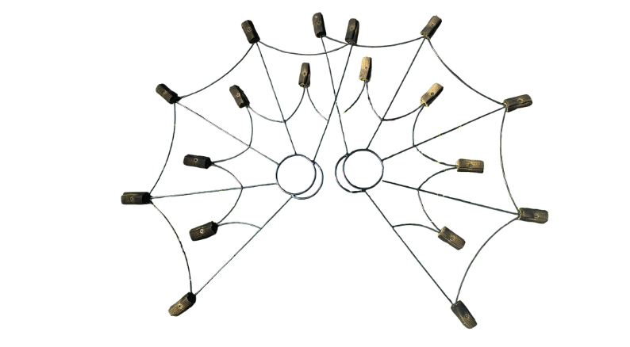

The FN&TT Fire Program
A structured, safety-first pathway for dancers ready to explore fire artistry. From your very first prop class to approved fire performance — Fiery Nights & Tribal Temptations will take you there, safely.

How the Fire Program Works
The Fiery Nights & Tribal Temptations Fire Program is a step-by-step certification system that takes dancers from zero fire experience all the way to performing with fire at approved venues and events.
Every level has a purpose. Every certification builds on the last. Safety is always the first and final word — no exceptions.
Fire is powerful and beautiful and demands real respect. Our program makes sure every dancer who works with fire at FN&TT is genuinely ready for it.
Fire Program Certification Levels
🔥 Level 1 — Fire Safety Foundations
Everything starts with safety. Level 1 covers fire safety principles, hazard awareness, emergency procedures, prop anatomy, and the FN&TT safety culture. No flame until all Level 1 requirements are met.
Prerequisite: Fire Pathway Prep class
🔥🔥 Level 2 — Prop Handling Foundations
Cold-prop mastery. Level 2 focuses on grip, posture, prop handling, basic spins, pathways, and choreography integration with unlit props. You must demonstrate full control before moving to live flame.
Prerequisite: Level 1 certification
🔥🔥🔥 Level 3 — Movement & Choreography with Flame
First supervised light sessions. Level 3 introduces fueling procedures, ignition protocols, and choreography with live flame in controlled environments with a certified Fire Safety Lead and assigned spotters.
Prerequisite: Level 2 certification
🔥🔥🔥🔥 Level 4 — Performance-Ready Fire Artist
The pinnacle of the FN&TT fire path. Level 4 certifies dancers for approved public fire performance at FN&TT-vetted venues and events. Includes full technique evaluation, safety assessment, and Fire Safety Lead sign-off.
Prerequisite: Level 3 certification + instructor approval
Fire Props

FN&TT fire performers work with the following approved fire props, introduced progressively through the certification levels:
- 🔥 Fire Fans
- 🔥 Fire Palms (palm torches)
- 🔥 Finger Torches
- 🔥 Fire Crowns
- 🔥 Candle Trays
- 🔥 Fire Bowls
- 🔥 Additional props approved by FN&TT leadership
Our Safety Culture
At Fiery Nights & Tribal Temptations fire is never taken lightly. Our safety culture is built into everything we do:
- ✅ No one burns alone — ever
- ✅ Certified Fire Safety Lead required at every fire session
- ✅ Assigned spotters for every performer
- ✅ Zero tolerance for unsafe behavior
- ✅ Safety always comes before the performance
- ✅ Venue and local fire marshal approval required for public performance
- ✅ Fire safety equipment on site at all times
Ready to Walk Through Fire? 🔥
The fire path starts with Fire Pathway Prep — a no-flame class that gives you the foundation you need. Reach out to find out when the next session is scheduled.
Ask About the Fire Program View All Classes